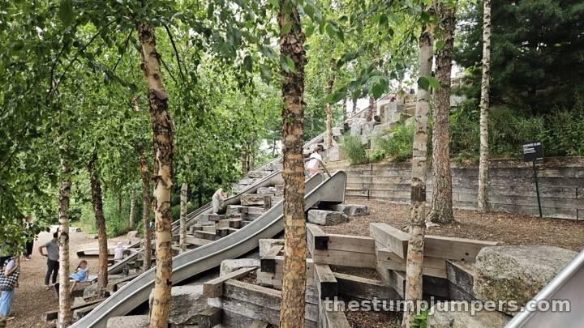
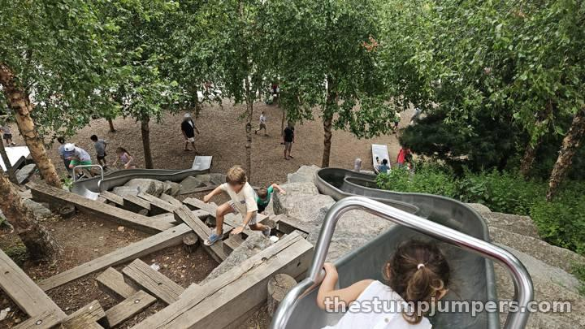
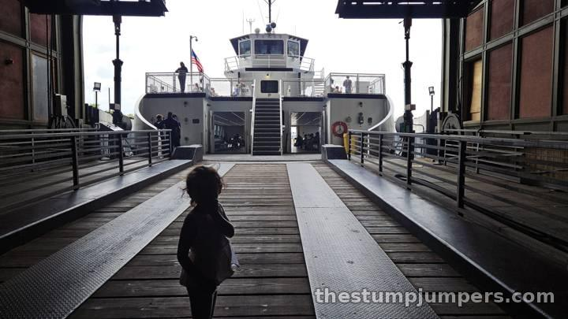

Four Slides and a Hill: Slide Hill, Governors Island

Slide Hill is exactly what it sounds like: a bunch of metal slides built into the side of a hill on Governors Island. And it's great, because it does this one thing very, very well. There's a short fat slide, a long thin slide, and a few in between, including one wide enough for two to ride down together.

I personally prefer the granite slides at the Battery Playscape, but these are longer. In fact, the longest slide in all of New York City is right here, 57 feet from top to bottom. (For the fastest slide in the city, see Chelsea Waterside.)

Half the fun is getting to the top, because there are multiple ways up. You can climb the stone steps, follow a well-landscaped winding path, or clamber up the wooden beams terracing the slope. Every kid we saw had a favorite route, and most of them changed it every lap.

If you've never been to Governors Island with kids, it's worth a trip, and this is a great stop while you're there. It's an easy ride on the ferry, which seems to be free on weekend mornings. Time your visit with a stop at The Yard: most of the families we saw on Slide Hill headed straight over as soon as The Yard opened.
Verdict: worth the trip, especially as part of a full day on the island.
The Stump Report
Biking & Running There
By bike: ride the Hudson River Greenway to the Battery and take your bike on the Governors Island ferry. Slide Hill is at the island's southern end, an easy car-free ride from the dock. On the run: the island's flat waterfront promenade is a great run, with Slide Hill as the reward. By train: 1 to South Ferry, R or W to Whitehall St, or 4/5 to Bowling Green, then walk to the ferry at the Battery Maritime Building. Ferries also leave from Pier 6 in Brooklyn Bridge Park.